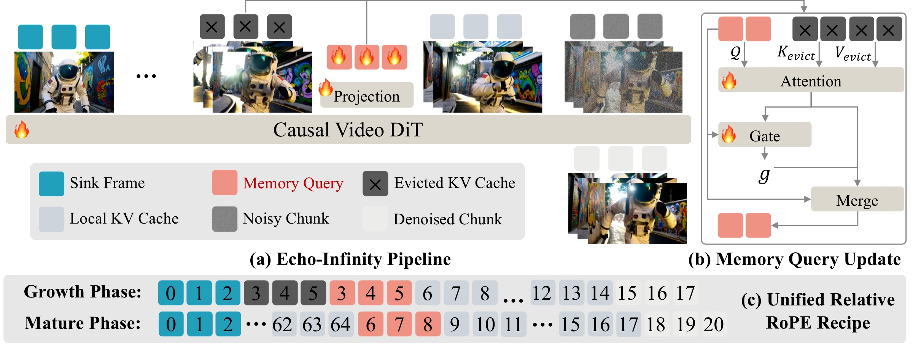

Echo-Infinity demonstrates hour-scale and real-time video generation with a learnable memory to filter, abstract, and compress any-length history at constant cost, suggesting a practical path toward infinite video generation.
Abstract
We present Echo-Infinity, an autoregressive (AR) framework towards real-time infinite video generation that employs a learnable evolving memory to dynamically filter, abstract, and compress any-length history at constant cost. Existing methods mainly curate memory with predefined KV-cache schedules, fixed-ratio heuristic compression, or inference-time RoPE adaptation. These designs inevitably lose historical information and amplify compounding errors due to their limited cache window and ignorance of autoregressive generation noise. Inspired by human memory consolidation, Echo-Infinity replaces handcrafted memory curation with learnable Memory Queries, which are updated by attention and a gating mechanism when past frames are evicted from the local window. The queries are optimized end-to-end with the video diffusion transformers (DiTs), forming an evolving memory that supports arbitrary compression ratios with constant computation independent of video length. They also act as a generalizable generation prior, improving quality even when only the optimized initial state is used. We further introduce Unified Relative RoPE Recipe, which anchors the sink frame to start from id 0 and lets the newest frame id grow at most to the DiTs' pretrained maximum temporal RoPE id fmax throughout training and inference, freeing the model from the finite RoPE constraint and closing the train-test RoPE extrapolation gap. In long and short video generation, Echo-Infinity achieves state-of-the-art performance, and, to our knowledge, demonstrates promising 24-hour (>1.3M frames) real-time rollouts for the first time, suggesting a practical path toward infinite video generation.
Contributions
Three core advances that together unlock infinite, real-time video generation.
End-to-End Memory Query
We propose Echo-Infinity, an autoregressive framework towards real-time infinite video generation, replacing handcrafted memory curation with end-to-end trainable Memory Query that is optimized to filter, abstract, and compress arbitrary-length history at constant computation cost.
Unified Relative RoPE Recipe
We employ Unified Relative RoPE Recipe, which keeps every active temporal RoPE id within the trained range throughout training and inference, avoiding the RoPE train-test extrapolation gap.
Generalizable & Real-Time
We achieve generalizable and state-of-the-art performance on long, short, and interactive video generation benchmarks. We further provide the first demonstration of stable quality over 24-hour real-time video generation (>1.3M frames), paving the way toward infinite video generation.
Method
A learnable memory state, updated by attention and gating on every eviction, plus a relative RoPE schedule shared between training and inference.

Figure 2. Echo-Infinity introduces an end-to-end trainable Memory Query that filters, abstracts, and compresses evicted history KV caches through attention and gating, enabling evolving compression of arbitrarily long histories. To avoid temporal RoPE extrapolation during inference or even overflow, Echo-Infinity uses Relative RoPE throughout training and inference, which anchors the sink frame to start from id 0 and lets the newest frame id grow at most to the backbone's pretrained maximum temporal RoPE id fmax (e.g., fmax=20 for Wan2.1-1.3B), closing the RoPE extrapolation gap.
Three-Tier KV Organization
Inspired by the human memory hierarchy, the per-layer cache is split into sink frames (global anchor), a local window (working buffer of recent frames), and a learnable memory query (long-term evolving store).
Memory Update on Eviction
When the local window slides forward, evicted KVs feed a cross-attention encoder that refreshes the queries, followed by a sigmoid-gated residual that selectively overwrites memory state — jointly optimized end-to-end with the video DiT.
Unified Relative RoPE Schedule
Sink stays at id 0; the newest frame grows up to fmax; older frames rotate backward once that bound is reached. Every active id stays inside the trained range [0, fmax], in both training and inference — no overflow, no extrapolation.
Qualitative Comparison
Each row shows the same prompt rendered by four methods. Echo-Infinity (Ours) on the left, then LongLive, MemFlow, and Memorize-and-Generate. Click any prompt to enlarge.
Quantitative Results
Table 1. Single-Prompt 30s / 240s Long Video Evaluation (VBench-Long / MovieGen)
| Method | #Params | Throughput (FPS) ↑ | 30s ↑ | 240s ↑ | |||
|---|---|---|---|---|---|---|---|
| Quality | Semantic | User Pref. | Quality | User Pref. | |||
| LongLive | 1.3B | 20.7 | 83.59 | 80.28 | 10.47 | 79.79 | 6.13 |
| MemFlow | 1.3B | 18.7 | 83.35 | 80.85 | 10.13 | 79.31 | 5.93 |
| Memorize-and-Generate | 1.3B | 21.7 | 83.69 | 81.01 | 14.73 | 75.49 | 2.13 |
| ∞-RoPE | 1.3B | 17.0 | 83.38 | 74.67 | 5.13 | 79.99 | 14.13 |
| Echo-Infinity (Ours) | 1.3B | 18.5 | 85.61 | 82.01 | 59.53 | 81.23 | 71.67 |
Table 2. Single-Prompt 5s Video Evaluation (VBench)
| Method | #Params | Throughput (FPS) ↑ | Evaluation scores ↑ | ||
|---|---|---|---|---|---|
| Total | Quality | Semantic | |||
| Diffusion Models | |||||
| LTX-Video | 1.9B | 8.98 | 80.00 | 82.30 | 70.79 |
| Wan-2.1 | 1.3B | 0.78 | 84.26 | 85.30 | 80.09 |
| Autoregressive Models | |||||
| SkyReels-V2 | 1.3B | 0.49 | 82.67 | 84.70 | 74.53 |
| MAGI-1 | 4.5B | 0.19 | 79.18 | 82.04 | 67.74 |
| Self Forcing (chunk-wise) | 1.3B | 17.0 | 83.08 | 83.97 | 79.53 |
| Causal Forcing (chunk-wise) | 1.3B | 17.0 | 83.94 | 84.59 | 81.35 |
| Long Autoregressive Models | |||||
| LongLive | 1.3B | 20.7 | 83.29 | 84.09 | 80.06 |
| MemFlow | 1.3B | 18.7 | 83.62 | 84.52 | 80.02 |
| Memorize-and-Generate | 1.3B | 21.7 | 84.06 | 84.84 | 80.96 |
| Echo-Infinity (w/o Memory Update) | 1.3B | 18.9 | 84.57 | 85.51 | 80.80 |
| Echo-Infinity (w/ Memory Update) | 1.3B | 18.5 | 85.35 | 86.32 | 81.49 |
Table 3. Multi-Prompt 60s Interactive Evaluation (MemFlow benchmark)
| Method | Quality Score ↑ | CLIP Score ↑ | |||||
|---|---|---|---|---|---|---|---|
| 0–10s | 10–20s | 20–30s | 30–40s | 40–50s | 50–60s | ||
| LongLive | 79.38 | 34.08 | 32.09 | 32.03 | 31.55 | 30.88 | 30.49 |
| MemFlow | 78.91 | 33.48 | 31.94 | 31.95 | 30.87 | 30.53 | 30.23 |
| Memorize-and-Generate | 79.15 | 33.58 | 31.43 | 31.14 | 30.65 | 30.48 | 30.27 |
| ∞-RoPE | 79.22 | 33.15 | 32.47 | 31.41 | 30.46 | 30.29 | 30.17 |
| Echo-Infinity (Ours) | 81.71 | 34.10 | 32.42 | 31.99 | 31.18 | 30.83 | 30.74 |